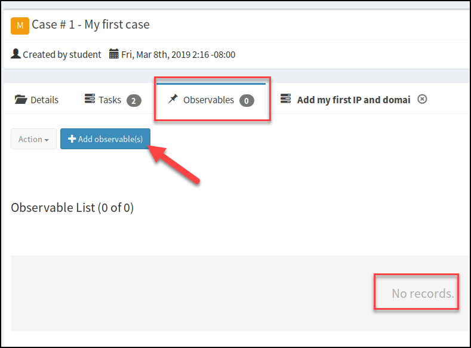
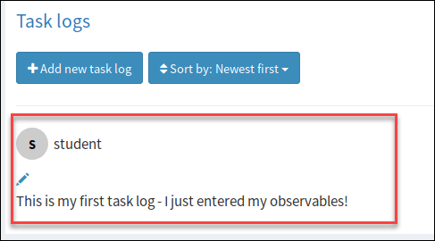
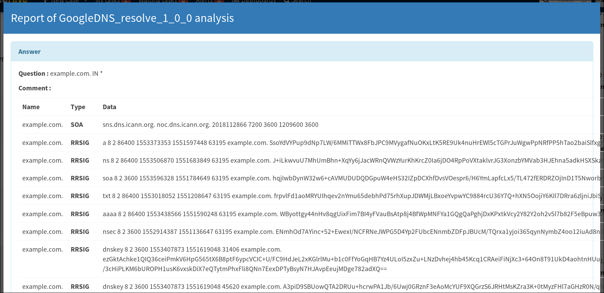

Objective
• Become familiar
with TheHive incident management system (IMS) workflow and concepts
• Understand IMS workflow -
case
and task creation, entering observables, and enrichment
• Use Cortex automation engine for
indicator
enrichment
we are going to deploy our docker:
cd /labs/1.1
docker-compose up -d
A docker is a software platform that allows you to build, test, and deploy applications quickly.
If you want to confirm that de setup went accordingly you can type: docker ps
And it will show you every container that's currently running
Once you are logged in, you will see the main interface as shown below. Note the top bar where you can see the active count of tasks assigned to you, alerts in the queue, and the New Case feature. Let's take a look at these first and describe what each is telling us.
1. Explore the Main Interface
New Case - A case is created for every unique incident being tracked in TheHive. Cases contain child items called "tasks", which are individual actions the analyst must take before the case can be closed. Examples of tasks would be blocking an IP address or searching for other infected machines via the SIEM.In my VM there are no case templates for the current configuration so clicking on New Case will open up a blank case creation window. If, there were "Case Templates" created however, a drop down arrow would appear as shown in the photo below. Selecting one of these templates would populate the case with pre-defined tasks appropriate for the scenario. The picture below shows some of the types of case templates you might see for the average SOC.
Tasks - The "My tasks" button shows how many tasks are assigned to your specific analyst account in TheHive. Using TheHive in a real security operations situation, every analyst in the SOC would have their own login name for which "tasks" can be tracked individually. If a new case is started with 3 separate tasks, analysts can assign them individually, allowing the items required to close the case to be assigned to 3 separate people to be worked on in parallel. The amount of tasks you have assigned to you is what is represented by this number.
Waiting tasks - The waiting tasks count is how many outstanding tasks exist in the system that have not been assigned to anyone.
Alerts - TheHive can be used as an alert aggregation point, allowing the SIEM and any other security appliance to submit information via a web API that will show up in the dedicated alert dashboard. The idea is for whoever is in charge of triaging alerts to watch the alert dashboard for incoming items and either accept them as valid, turning them into a new case, or reject them as false positive. While your organization may do this in a different system - in the SIEM, IDS, or in a dedicated software platform, for this class, this will be our main point of alert triage.
2. Create A New Empty Case
Let's create a new blank case and explore TheHive's workflow. Click on "New Case" in the top bar. You should see the "Create a new case" window appear with no details filled in (since we selected Empty Case). This is the selection you would choose for manual case creation where you wish to fill in all the details by hand. This is the least efficient way of making a case in TheHive but makes a good first step. The better way, which we will do in a moment, is to create cases either through Alerts in the alert queue, or by viewing a Case Template.For our new empty case, we're going to fill in the Title, Description, and add some sample Case tasks as shown in the picture First type the title below in the Title box at #1:
My first case
Then fill in the description box with something similar to the below text at #2.
This is my first empty case using TheHive!
Finally, we need to enter some Case tasks (we will not modify Severity, Tags, PAP, Date, or TLP for this case). These are the individual steps that need to be done before whoever takes responsibility for this case closes it. Let's add two items as an example. Type the following in the task title box at #3 then press the "Add task" button to add it as the first item.
Add my first IP and domain observables
Then add a second task also at #3 that says:
Use Cortex to enrich the observables
Then press the "Add task" button again. Your screen should now look like the picture below. If it does, press the "Create case" button.
After a moment you will be taken to the page for our new case which should look like the picture below.
Notice the "Waiting tasks" count has now advanced to 2, but "My tasks" has remained at zero. Check the "Assignee" field - it says our user "student", why then do we not have anything under "My Tasks"? The reason is, as previously mentioned, both cases and tasks can be assigned. Since we have not accepted the tasks, they remain open for any analyst to pick up, this is how TheHive works.
3. Working the First Task - Adding Observables
Now that we've got a new open case, let's take ownership of some of our simple tasks and work them through. Click the tasks tab (#1) and the screen will change to show the list of tasks we previously entered. Let's take the first task "Add my first IP address observable" by pressing the "Start" button (#2).
Once the task is started a new tab will appear showing the name of the task as shown below.
the task specific view, you can see it opened in a new tab (#1) that is different from the previous base-level details view. In this view, notice the task (title) is listed in the red box, and there is a place to take notes for any actions taken on the task in the "Task logs" section.
Click the "Observables" tab as shown in #2 to move to the screen where we can start entering our observable information. Once clicked, you should see the following screen.

Since no observables have been entered towards this case, the screen is blank. Let's add some new information by clicking "Add observables(s)". Fill in the "Create New Observables" screen that pops up with the following information:
Type:
ip
Value:
8.8.8.8
1.1.1.1
Description:
Sample IP addresses
You do not need to change any other values. The screen should now look like this:
Once the information is entered press the "Create Observables" button and you will be taken back to the observables tab. You should now see a message confirming the observables were created and see the two IP addresses listed.
We're now going to add one more observable, a domain name this time. Since it is a different type of data it must be added in a separate step. Click on the "Add Ocbservables(s)" button one more time and enter the following information:
Type:
domain
Value:
example.com
Description:
Sample hostname
You do not need to change any other values. The screen should now look like this:

Once the information is entered press the "Create Observable" button and you will be taken back to the observables tab. You should now see a message confirming the observable was created and see the new domain name observable listed.
At this point we have completed what we set out to do for our first task so let's close it out. Flip back to the task tab by clicking on it.
Let's now write a quick task log explaining what we did before we close the task. This is where, if this were a real ticket, you would put all the investigation details for completing that particular task including the process and tools you used and any relevant output collected. Click the "Add new task log" button under the "Task logs" heading.
Once the editor has opened, paste the following text into the task log:
This is my first task log - I just entered my observables!
Once the text is entered, press the "Add log" button.

We will then see the task log created.

We have now completed the task and wrote a note about what we've done, so the task can be closed. To close it, press the "Close" button in the upper right of the page.
We have just closed our first task with TheHive! We should see the task now listed with a green check mark next to it as shown below. Notice it is time and date stamped with the time it took to complete and if you have the "wall" of Activity shown, we (and any other analysts logged in to TheHive) will see an item listing that the task has been closed.
4. Work the Second Task - Using Cortex
it's time to work that second task so we can eventually close the entire case. Select "Start" on the second task to begin it.Once the next task has been started another new task-oriented tab will be opened as shown below. In this task, we're going to use the tool called Cortex to enrich our information about our indicators. Select the "Observables" tab to go back to the observables list.
Cortex is a program that is packaged with but is separate from TheHive. It works in the background to take the information we've entered as observables and perform a variety of additional automated lookups on it using what it called "Analyzers". It is the automation engine for TheHive in that it will perform these tasks with the simple click of a button and present the results to us without us ever having to leave the page! In our case we picked known entities belonging to Google(8.8.8.8) and Cloudflare (1.1.1.1), but in a normal scenario, these Cortex "Analyzers" would assist us in quickly determining useful info about any hashes, IP addresses, domains, or other observable types an Analyzer is compatible with.
When a deployment of TheHive has Cortex integration live and enabled there is a green circle around the brain icon on the main Case list page (no need to verify this now). TheHive also links to MISP as a threat intelligence platform, the status of this link is shown next to Cortex in another adjacent circle.
To use Cortex we first must select the observables we want to submit to it. We want to enrich all 3 of our pieces of information so select the top check box which will select all 3 items below it. Once this is done, select the action button then hit "Run analyzers"
A new window will appear with a selection of available analyzers (the options you see may differ slightly). Cortex knows which types of analyzers can be used with each data type and offers you to run any Analyzers that are available for the data types selected in the previous step. Each analyzer can be separately enabled and configured to work with any external or 3rd party services the SOC subscribes to such as VirusTotal, Shodan, Censys, and more. Since many of these services require either paid subscriptions or personal API keys they are not enabled in our deployment, but be aware that there is an enormous list of Analyzers available. For this VM, we will only use some of the Analyzers that can be used freely without API key restrictions.
Select the "GoogleDNS Resolve" plugin (note the version number may differ from the screenshot if the Analyzer is updated) then press the "Run selected Analyzers" button to kick off Cortex. In the case of a domain name observable, this plugin simply uses the Google DNS servers to perform lookups for any DNS records for the domain name. For an IP address, a PTR record lookup is performed.
You will be taken back to the Observables screen, after a few moments you should see new tags pop up attached to each observable as shown in the picture below. Note: Your DNS results or record count may vary from the screenshot.
Click on the blue tag in the top example.com observable to bring up the results of the Cortex GoogleDNS Analyzer enrichment. You should see a popup window with the DNS records for the site.

Of course Google has many different DNS records so this output is rather large, but notice how easy it was to automatically pull this information and make it immediately accessible from TheHive where it is needed, without having to bounce out of the tab to other websites? This is one of the best features of TheHive/Cortex. Also, as new cases are made in the future, if any analyst ever enters google.com into an observable in any other case, this information will already be present, giving immediate context. Very useful!
Scroll down to the bottom of the DNS record listings and hit the "Close" button to close the window.
Next select the blue tag related to the 8.8.8.8 IP address.
You should see a different report shown for the Google DNS Analyzer results. The analyzer ran a "PTR" record lookup that shows 8.8.8.8 resolves to "google-public-dns-a.google.com".
We've now completed what we set out to do for the second task. Click the task tab at the top of the screen to go back to the task page.
Once on the task page, click the "Close" button in the upper right hand corner. Since you have already seen how to write a task log we will skip that for this task.
5. Close the Case
Once the second and final task for this case is closed you will be brought back to the Tasks tab. You should see that the second task has been closed, and that both tasks are now closed (shown as green check marks next to each item). Since all tasks created for this case are now complete, we can now close the case. Select the "Close" button at the top of the tasks screen as shown in #1 in the photo below.To close the case TheHive then asks for you to fill out some additional classification information on what actually occurred in the case. Since this was an example case, select the options as given below.
Status: Other
Then paste the following information into the Summary box. For a regular case in any ticketing system, a summary of the each case should be written upon closing that give any future readers a quick single sentence summary of what occurred as well as maybe a bullet point style list of the major assets and impact of the case.
Your window should now look like the picture below:
Just finished the first case I've done with TheHive, I've now used cases, tasks, observables, and task logs.
I even automatically enriched observables of multiple types using Cortex with a single button press!
Once this information is pasted into the box, hit the "Close Case" button. You should see a notification stating the case has been closed.
In this lab, we have:
• Manually created a case in TheHive incident management system•Created custom tasks to perform inside a new empty case
• Worked 2 tasks to completion
• Entered IP address and domain name observables into TheHive
• Used Cortex to automatically enrich the entered observables with the Google DNS Analyzer
• Closed the case with a classification and summary
To shut down the services used for this lab go back to your terminal window (or open a new one) and enter the commands below:
cd /labs/1.1
docker-compose downYou should see the following response: